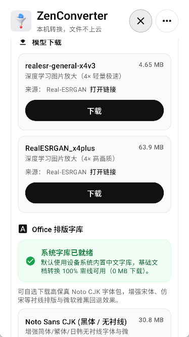
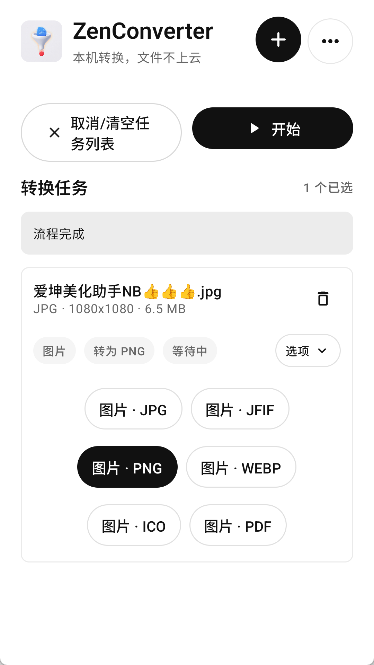

ZenConverter 的 38.8MB 之谜：为什么一个能做 AI 超分的转换器体积却这么小
一个 Android 视频格式转换器，号称支持 AI 图片 4× 超分、视频补帧、格式互转全套功能，安装包居然只有 38.8MB。这背后藏着一整套关于体积、架构和取舍的设计哲学。
如果我告诉你，一个声称能做 AI 图片 4× 超分、视频帧插值、格式互转、音频提取的 Android 应用，安装包却只有 38.8 MB（你可以从官方下载亲自验证这个数字），你第一反应是什么？会不会觉得这玩意儿要么功能阉割了，要么 AI 是幌子——毕竟同类应用动辄上百 MB，光一个 Real-ESRGAN 模型就有 60 多 MB。
我也是带着怀疑去看 zenconverter官网 的。结果发现这不是巧合，也不是打包技巧。38.8 MB 是整套设计的明确目标，围绕这个目标它做了一整套反直觉的取舍——有些省体积，有些换体积换了稳定性，有些干脆把负担甩给了用户。
按需下载：把非刚需的东西从 APK 里赶出去
最直接的一刀。zenconverter 把 AI 模型做成了按需下载，而不是打包进 APK。
Real-ESRGAN 图片超分有两套模型：轻量版 4.65 MB，高画质版 63.9 MB。RIFE 视频补帧的模型也不小。如果都塞进安装包，38.8 MB 直接变成 107 MB 起步——还没算以后可能新增的 AI 模型。
"AI 功能不是刚需"，开发者在 zenconverter文档 里写得很直白。很多用户拿它来只是转个 MP4 到 MP3，或者把图片压小传群里。对这些人来说，60 MB 的 AI 模型是纯浪费。所以策略变成：你想用 AI 超分？点开那个功能，它才弹出来让你下载模型，下载完用 SHA-256 校验确认没被劫持，然后缓存到应用私有目录。卸载应用就清掉。
这个策略的好处不止体积。模型可以独立更新——哪天 Real-ESRGAN 出了改进版，不用等应用发新版，直接换模型文件就行。代价也很明确：第一次用 AI 功能的时候必须联网，而且中国大陆用户可能还得挂代理才能从 GitHub Releases 拉模型。

arm64-only：放弃 32 位设备，省掉一半 native 库
第二刀更狠。zenconverter 的 APK 只编译了 arm64-v8a 一种 ABI，32 位 ARM 设备直接装不上。
为什么？因为它依赖的 native 库太多了——FFmpeg、Tencent NCNN、office2pdf、woff2……每个库都要编译 arm64 和 armeabi-v7a 两套。砍掉 32 位支持，等于所有 native 库体积直接减半。
这在 2024 年其实是个安全选择。主流 Android 设备早就过渡到 64 位了，Google Play 也要求新应用必须支持 64 位。但代价是：任何还在用 32 位老机型的用户（比如某些入门级联发科芯片的老机器），连装都装不上。这不是"AI 功能不可用"，是整个应用不可用。
引擎路由：一个 UI 后面藏着不止一个转换引擎
你打开 zenconverter 的界面，选文件、选输出格式、点开始——看起来统一得很。但它的架构里，UI 从不直接做转换。中间隔着一层"引擎路由"：根据输入文件类型、用户选的输出格式、勾了哪些高级选项，自动选对应的引擎。
最常用的是 FFmpeg 路线——覆盖绝大多数音视频格式互转、压缩、滤镜需求。图片 AI 超分走 Tencent NCNN + Real-ESRGAN。视频 AI 补帧有两条路：RIFE 2×（NCNN Vulkan 深度学习）和 FFmpeg minterpolate（传统光流算法），用户可以自己选。还有 office2pdf 和 woff2 的专用路线。
这个设计让"体积小"和"功能多"同时成立——每个引擎只在需要的时候才跑，不需要的引擎代码虽然在 APK 里（native 库没法动态加载），但上层逻辑不会让你走错门。而且引擎独立意味着可以渐进式扩展：哪天加了新的格式支持，只要在路由表里加一行，不用动其他引擎的代码。
串行队列 vs 并行：一个反直觉的稳定性选择
说到引擎，还有个容易被忽略的设计：所有转换任务串行执行，一个接一个，不并行。
"为什么不并行？手机多核 CPU 啊"——我第一反应也是这个。但文档里给的理由很实在：每个引擎的内存和 CPU 占用都很高，特别是 NCNN 跑 AI 超分的时候，显存能吃掉好几百 MB。并行跑两个大视频转换 + 一个 AI 图片超分，OOM（内存溢出）基本是必然的。
所以 zenconverter 的任务队列是 Pick → Configure → Queue → Foreground Service → Engine → Output 六步流水线。前台服务保证切到后台不会被系统杀掉（Android 对后台进程的限制越来越严，普通 Service 和 WorkManager 都扛不住长时间视频转换），串行队列保证每一任务拿到足额的资源不会互相踩。
代价是：你选了十个文件要转，得一个一个来，总耗时就是单个耗时相加。如果你急着出结果，只能祈祷每个任务都快。

取舍清单：38.8MB 背后都放弃了什么
把上面几条串起来，就能看到 zenconverter 的设计边界了。它不是一个"什么都做"的万能转换器，而是一个在体积、功能、稳定性、兼容性之间做了明确排序的工具：
优先保住的：体积小（38.8MB）、架构干净、失败不静默、本地优先（不上传任何数据）。
主动放弃的：32 位设备兼容、离线 AI 能力、多任务并行、RIFE Experimental 路线的稳定性保证、RTL（阿拉伯语/希伯来语）布局支持。
有条件提供的：AI 功能（需要 arm64 + Vulkan GPU + 能访问 GitHub）、高级滤镜（依赖 FFmpeg 编译时带了对应的编码器）。
这套设计意味着什么
如果你是一个经常在手机上转视频、压图片的人——比如剪短视频、处理游戏录制素材、把下载的 PDF 转成图片——zenconverter 值得装。它体积小、启动快、界面干净，失败了会明确告诉你哪个引擎、哪个环节出了什么问题（不是装神秘的"转换失败"）。
但如果你期望它是一个能装在任何老手机上、离线也能用全套 AI 功能、同时转十个大视频的超级工具——pass。它做不到，而且它不打算做到。38.8 MB 不是暂时的优化目标，是它整个设计哲学的锚点。
从代码仓库到你的手机
写到这里我也好奇——这套设计在社区里是什么样的。翻了一下仓库的提交历史，每次新版本加功能的时候，我几乎没见过"把模型打包进 APK"的讨论。开发者始终坚持按需下载，甚至连翻译都开放给社区纯文本贡献（不需要懂 Kotlin），整个项目的风格就是：能轻就轻，能开放就开放，不做黑盒。